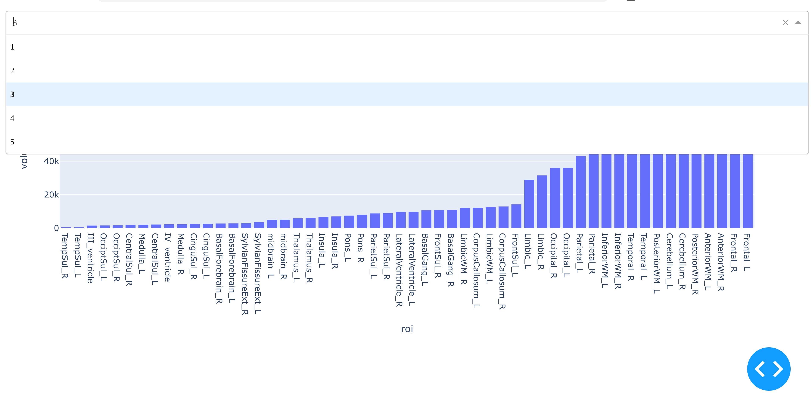

Dash callbacks¶
Our previous dash application wasn’t that impressive. We’d like to take user input and modify our page. TO do this, we need callbacks. In this example, we create a dropdown menu that selects which graph we’re going to show.
from dash import Dash, dcc, html, Input, Output
import plotly.express as px
import pandas as pd
dat = pd.read_csv('kirby21AllLevels.csv')
dat = dat.loc[dat['type'] == 1].groupby(["roi", "level"])['volume'].mean().reset_index()
app = Dash(__name__)
app.layout = html.Div([
dcc.Dropdown(options = [
{'label' : '1', 'value' : 1},
{'label' : '2', 'value' : 2},
{'label' : '3', 'value' : 3},
{'label' : '2', 'value' : 4},
{'label' : '2', 'value' : 5}
],
value = 1, id = 'input-level'
),
dcc.Graph(id = 'output-graph')
])
@app.callback(
Output('output-graph', 'figure'),
Input('input-level', 'value'))
def update_figure(selected_level):
subdat = dat.loc[dat['level'] == int(selected_level)].sort_values(by = ['volume'])
fig = px.bar(subdat, x='roi', y='volume')
return fig
if __name__ == '__main__':
app.run_server(debug=True, host = '127.0.0.1')
The result looks like the followingm, where you can see the dropdown selection.

Diferent kinds of inputs¶
Dash has several kinds of inputs. A full list can be found here. We’ll go over a couple of types here. Try running the following code where you replace the relevant part.
from dash import Dash, html, dcc
app = Dash(__name__)
app.layout = html.Div([
])
if __name__ == '__main__':
app.run_server(host = '127.0.0.1')